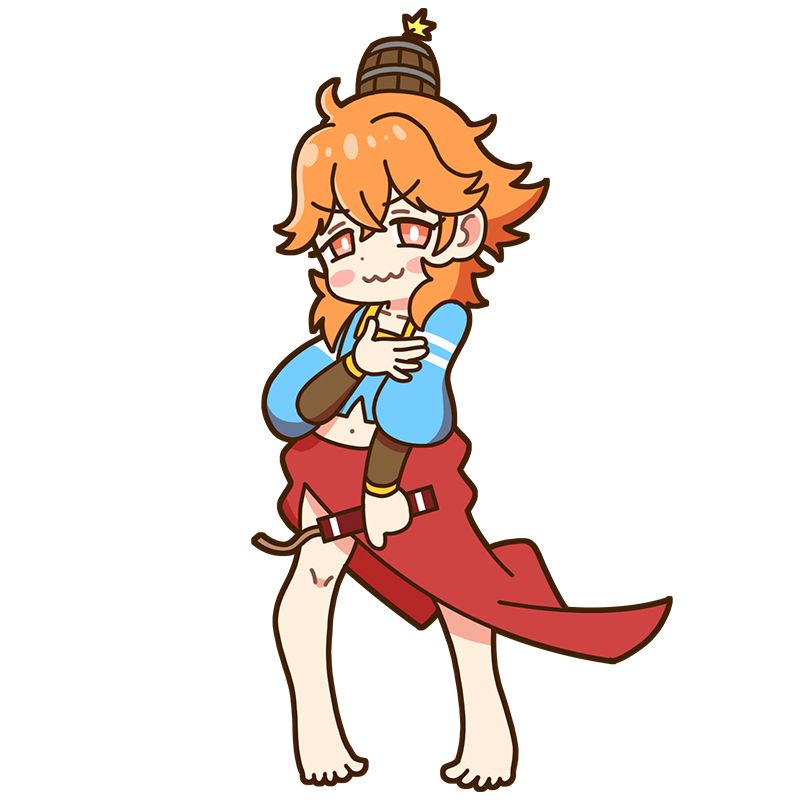

Hehe~. If you keep dragging your feet,
I might just blow you away, y'know?
Botticelli
Where the Breath of Spring Is Born,
Vanity Burns in Splendor
A Muse representing the Italian Early Renaissance. A cheerful goddess who brings flowers into bloom on the spring breeze, but once she loses her temper, she's liable to charge in carrying barrel bombs, declaring, "The best solution is to blow everything up!" She also has an older sister who's apparently quite on the plump side.
Style
Hometown
Italy
Classics
- "Primavera"
- "The Birth of Venus"
- "Venus and Mars" etc.
This is the Botticelli piece!
Primavera
One of Botticelli's masterpieces. As its title, Primavera ("Spring" in Italian), suggests, the painting depicts Venus surrounded by gods and goddesses celebrating the arrival of spring in a forest. Yet the meaning behind their mysterious poses and arrangement remains uncertain even today. Along with the lively expressions of its figures, the meticulously painted flowers and plants are among the work's greatest attractions.
Year
Around 1482
Medium
Tempera on panel
Dimension
202 cm x 314 cm
Collection
Uffizi Gallery
（Italy)
Who is Botticelli?
Sandro Botticelli
One of the leading painters of the Early Renaissance, Botticelli flourished a generation before Leonardo and Michelangelo. He was celebrated for his elegant and sensual mythological paintings, including The Birth of Venus. Later in life, however, he fell deeply under the influence of the friar Savonarola and is said to have abandoned many of his earlier works in favor of devout religious art. Incidentally, "Botticelli" was not his real surname—it originated as a nickname meaning "little barrel," derived from the nickname of his stout older brother, Giovanni, who was called "Botti" ("barrel").
Full Name
Alessandro di Mariano di Vanni Filipepi
Born
circa 1445
Died
May 17, 1510(aged ???)